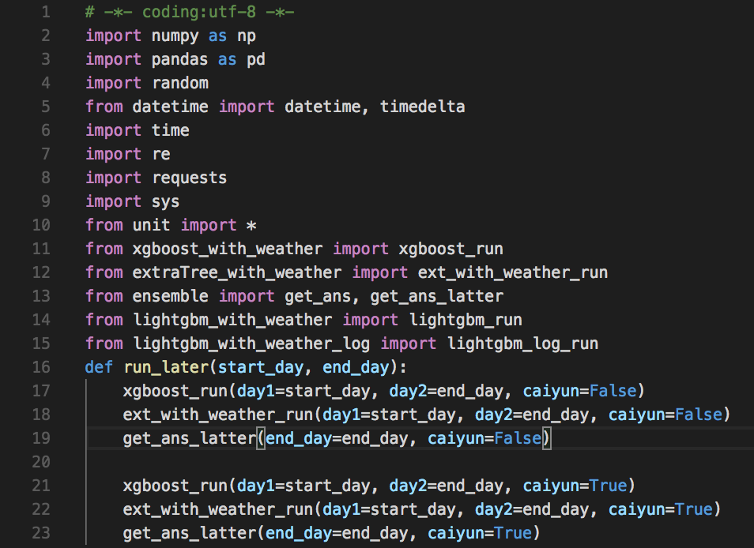
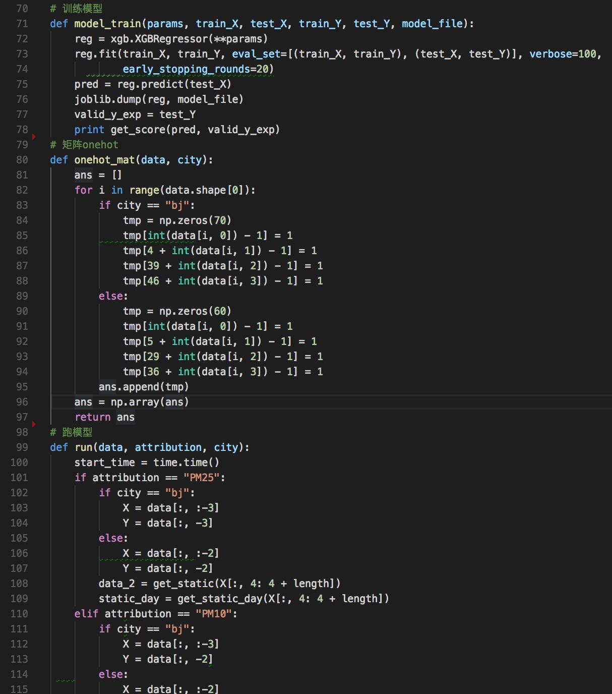
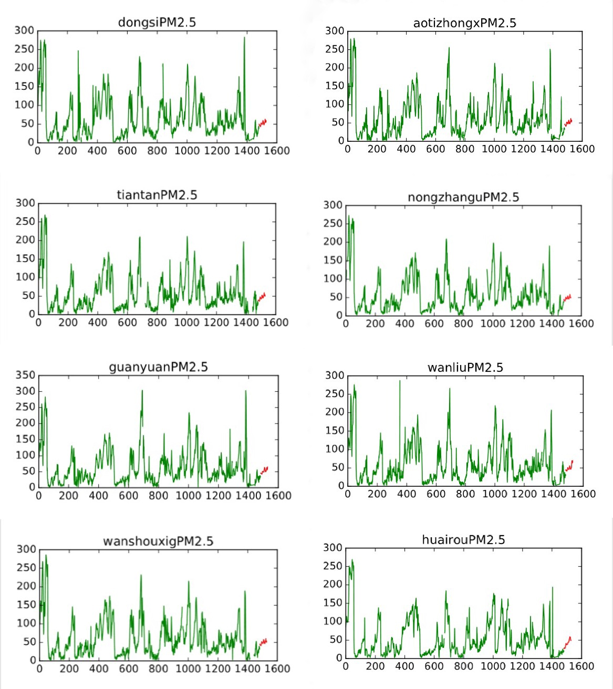
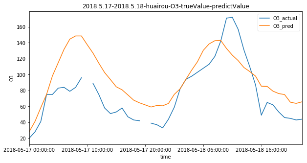
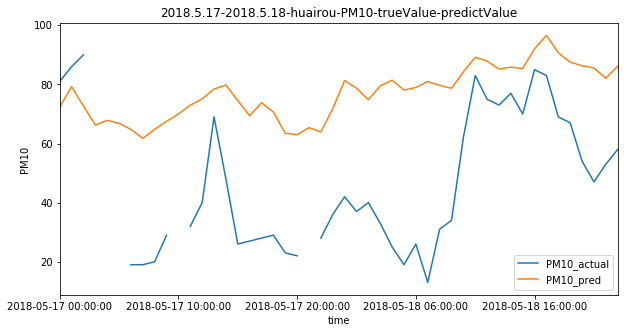
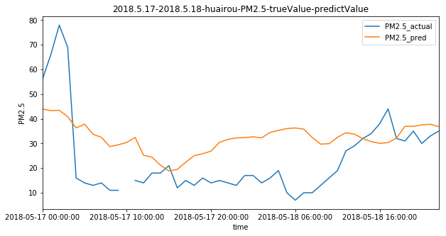

算法说明 / Arithmetic
主要模型
1）lightgbm为主要模型，每次预测一个值预测48次，ld和bj的5个预测值分别训练5个模型，所有站点一起训练
2）ExtraTreeRegression 每次预测48个值，分5个模型预测5个指标，所有站点一起训练
3）xgboost思路同lightgbm
4）lightgbm 对特征数据进行log处理预测，其他类似
主要特征
1）用前21天数据预测后两天的值，包括原始值，max,min,median等统计量，同时包含天，周等为单位的统计量
2）天气特征，主要使用网格数据，附近一个站点的数据，这里只用了温度，湿度和气压数据
3）天气预报，通过自己抓取得到，见crawl_data.py文件以及官方给定api数据
4）是否周末，是否工作日，是否工作日第一天，最后一天，是否放假第一天，是否放假最后一天
5）初预测指标以外的特征，比如预测PM25时，加入PM10的特征，发现只加入最后3-4天的数据比较好
模型结果融合
1）同一个模型用不同的参数来训练
2）同一个模型用不同的数据来训练，通过控制时间范围和数据缺失的多少来获得不同的训练数据
3）对获得结果进行简单mean或者median以及加权求和
4）是否周末，是否工作日，是否工作日第一天，最后一天，是否放假第一天，是否放假最后一天
5）初预测指标以外的特征，比如预测PM25时，加入PM10的特征，发现只加入最后3-4天的数据比较好
代码截图 / Code



预测结果展示 / Result

通过模型和算法，我们可以实现基于历史数据，实现对任一天的污染物浓度的预测。
预测结果对比 / Contrast


